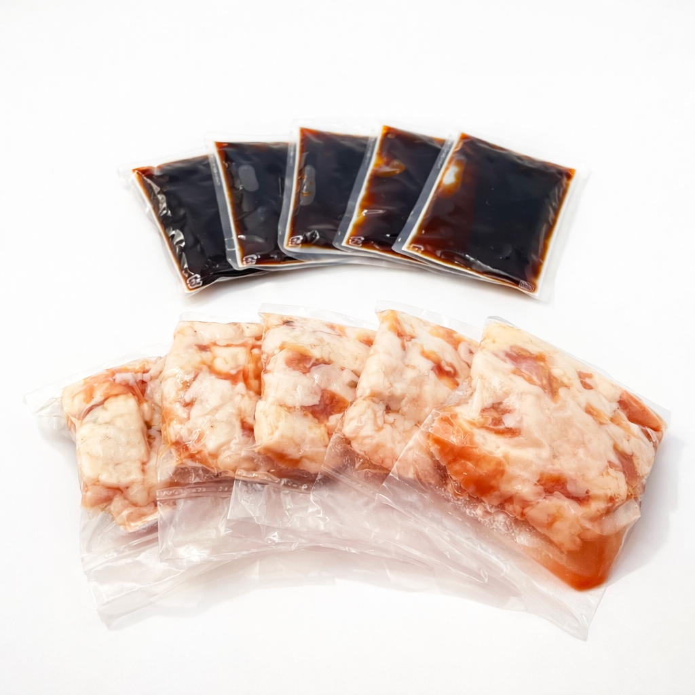

SCENE 01
I031

i 惣菜・加工品
博多醤油もつ鍋5回セット（10人前/2ｋｇ）
【冷凍庫に常備したい、家族で楽しむ本場のコク旨醤油もつ鍋。】
- 内容量スープ：5ｐ（200ｇ×5ｐ）、牛モツ：5ｐ（200ｇ×5ｐ）
- 保存冷凍
- 産地日本・アメリカ
商品の特徴を読む
食卓を囲む笑顔が目に浮かぶような、心も体も温まるひとときを演出しませんか。本場博多の味をご家庭で手軽にお楽しみいただける「博多醤油もつ鍋セット」をお届けします。 主役の牛モツは、丁寧に下処理されたぷりぷりのシマ腸のみを厳選。噛むほどに広がる上質な脂の甘みと旨みがたまりません。スープは、昆布とかつおの出汁が効いた、まろやかでコク深い特製醤油味。モツの旨みを最大限に引き立て、野菜にもしっかり味が染みわたります。 2人前の小分けパックが5セット入っているので、ご家族での食卓はもちろん、急な来客や「今日はちょっと贅沢したいな」という日にもぴったり。冷凍庫にストックしておけば、いつでも専門店の味を再現できます。 お好みのキャベツやニラ、ごぼうをたっぷり加えて、〆にはちゃんぽん麺やご飯で最後の一滴までお楽しみください。大切な方への贈り物としても喜ばれる本格もつ鍋セットで、特別な食卓を彩ってみてはいかがでしょうか。
公式サイトへ移動します。価格・在庫・配送条件は移動先で最終確認してください。
SCENE 02
スープは、昆布とかつおの出汁が効いた、まろやかでコク深い特製醤油味。
SCENE 03
本場博多の味をご家庭で手軽にお楽しみいただける「博多醤油もつ鍋セット」をお届けします。
PRODUCT INFORMATION
購入前に確認したい商品情報
- 商品名
- 博多醤油もつ鍋5回セット（10人前/2ｋｇ）
- 商品規格
- スープ：5ｐ（200ｇ×5ｐ）、牛モツ：5ｐ（200ｇ×5ｐ）
- 保存方法
- 冷凍
- 原産国
- 日本・アメリカ
- 製造地
- 日本
- 賞味期限
- 発送日より3ヶ月
原材料
牛シマ腸（アメリカ産）、還元水あめ、しょうゆ、発酵調味料、食塩、こんぶエキス、こんぶ加工品、醸造酢、かつおエキス／調味料（アミノ酸等）、カラメル色素、酒精、増粘剤（キサンタン）、（一部に小麦・大豆を含む）
FAQ
購入前のよくあるご質問
野菜や麺はついていますか？
こちらの商品は牛モツとスープのみのセットです。キャベツ、ニラ、ごぼうなどお好みの野菜や、〆のちゃんぽん麺、ご飯などは別途ご用意いただき、お好みのアレンジでお楽しみください。
スープが凍っていませんでしたが、大丈夫ですか？
スープは常温対応の製品のため、お届け時に凍っていない場合がございますが、品質には全く問題ございません。ご家庭で長期保管される場合は、モツと一緒に冷凍庫で保管することをおすすめします。
MEAT PLUS OFFICIAL SHOP
【冷凍庫に常備したい、家族で楽しむ本場のコク旨醤油もつ鍋。】
仕入れ・加工・梱包・発送まで自社で行うMEAT PLUSの公式オンラインショップでご注文いただけます。
公式オンラインショップで購入する